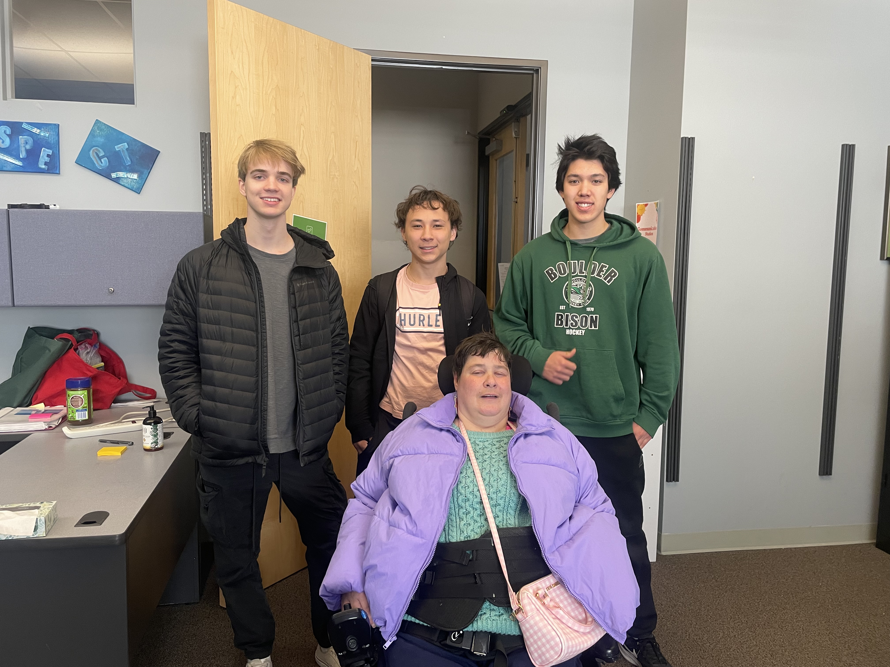

The Automated Dice Roller was designed for individuals who struggle with fine motor movements in their hands. The primary goal was to make a device that could roll dice with the push of a large and easy-to-push button.

The Automated Dice Roller was designed for individuals who struggle with fine motor movements in their hands. The primary goal was to make a device that could roll dice with the push of a large and easy-to-push button.
This project was completed for my ECEN 1400, Intro to Digital and Analog Electronics class during fall of 2022. My team and I worked with Imagine! to develop the functionality of the dice roller. Meeting with the individuals at Imagine! helped us consolidate the design of the roller. We received valuable input regarding the their preferences for the design.
Project Final Report